The starting point設計出發點
Translate the gourd’s silhouette and associations with good fortune into teaware.將葫蘆輪廓與祝福意涵，轉化為茶具的造型線索。
PRODUCT DESIGN / CAST-IRON TEAWARE
One familiar symbol, two ways to share a quiet moment. Cast-iron teaware explores the curves of a gourd through compact nesting and an expressive handle.從葫蘆的圓潤曲線出發，將祝福意涵融入日常品茶。透過小巧收納與提把造型兩個方向，探索鑄鐵茶具的形體、細節與使用關係。
THE PROJECT AT A GLANCE
Translate the gourd’s silhouette and associations with good fortune into teaware.將葫蘆輪廓與祝福意涵，轉化為茶具的造型線索。
Compare an integrated cup-and-pot set with a handled teapot.比較杯壺整合收納與提把茶壺，如何回應不同的使用關係。
Explore lid graphics, knobs, handles and spouts through the supplied concept boards.從既有提案檢視壺蓋紋樣、蓋鈕、把手與壺嘴的整體語言。
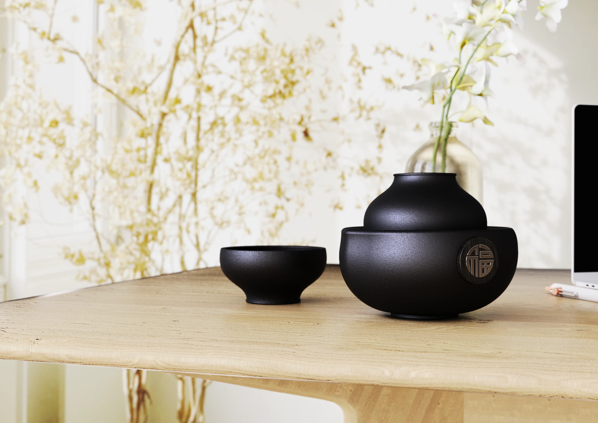
Original concept rendering.原始情境渲染。
01 / FORM & MEANING
The gourd offers a shared vocabulary: a rounded volume, a narrowing neck and a sense of continuity. Each proposal gives these cues a different role.葫蘆提供了共同的形態線索：圓潤量體、收束的頸部，以及曲線延續的整體感。兩個方案將這些特徵，分別帶入杯壺組合與提握細節。
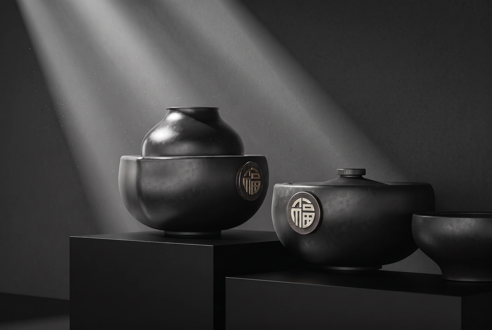
A small set with a cup that rests above the pot.從小巧尺度與杯壺疊放關係，建立一個人的品茶儀式。
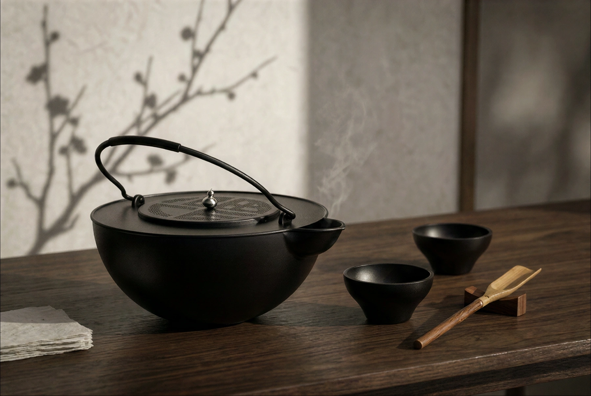
A full arch, a patterned lid and a gourd-inspired knob.透過弧形提把、福字紋樣與葫蘆蓋鈕，延伸祝福意涵。
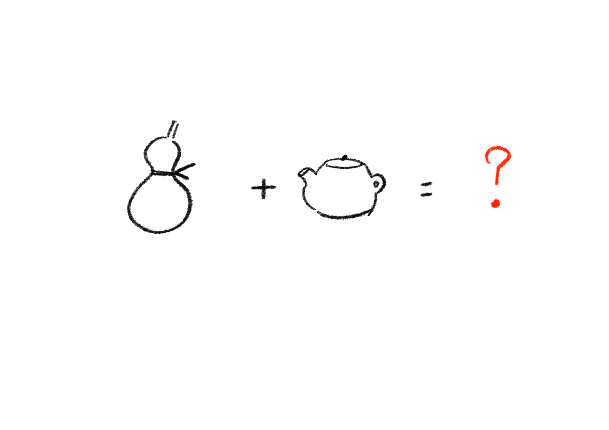
A gourd and a teapot become the starting point for exploring a new vessel.以葫蘆與茶壺的組合，作為器物造型探索的起點。
02 / DIRECTION 01 / COMPACT SET
The first proposal combines a rounded pot with a cup. When nested, the two forms build a gourd-like silhouette; separated, their roles become clear.第一個方向將圓潤壺身與茶杯整合。疊放時形成葫蘆般的輪廓，分開後回到盛茶與飲用的功能關係。
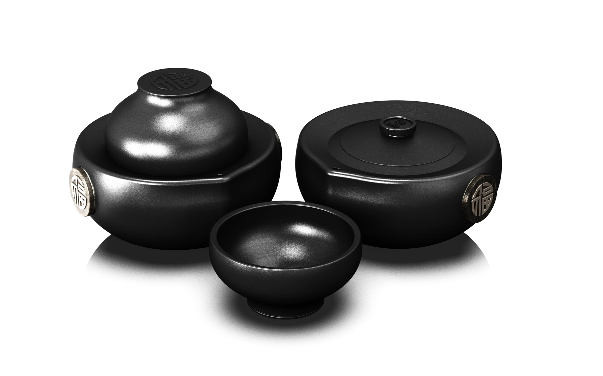
The cup completes the upper form instead of sitting as a separate accessory.茶杯作為上方量體，與壺身共同構成整體造型。
A circular “福” motif becomes a focal point on the dark surface.圓形福字作為深色壺身上的視覺焦點，呼應提案主題。
Reserve an image sequence to explain how the cup and lid are arranged during use.後續補入操作連續圖，讓取杯、開蓋與倒茶的關係更清楚。
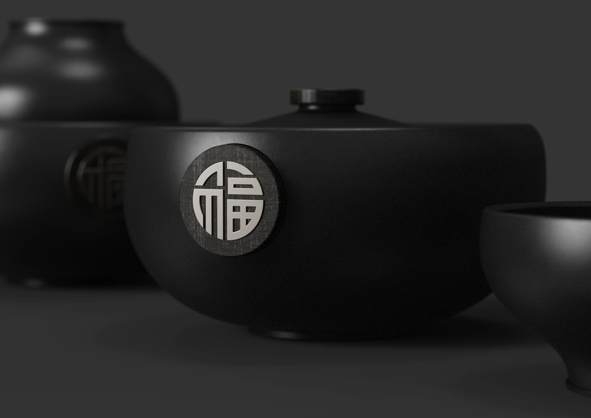
Surface, lid and nesting details / concept renderings.壺身表面、蓋鈕與杯壺疊放細節／概念渲染。
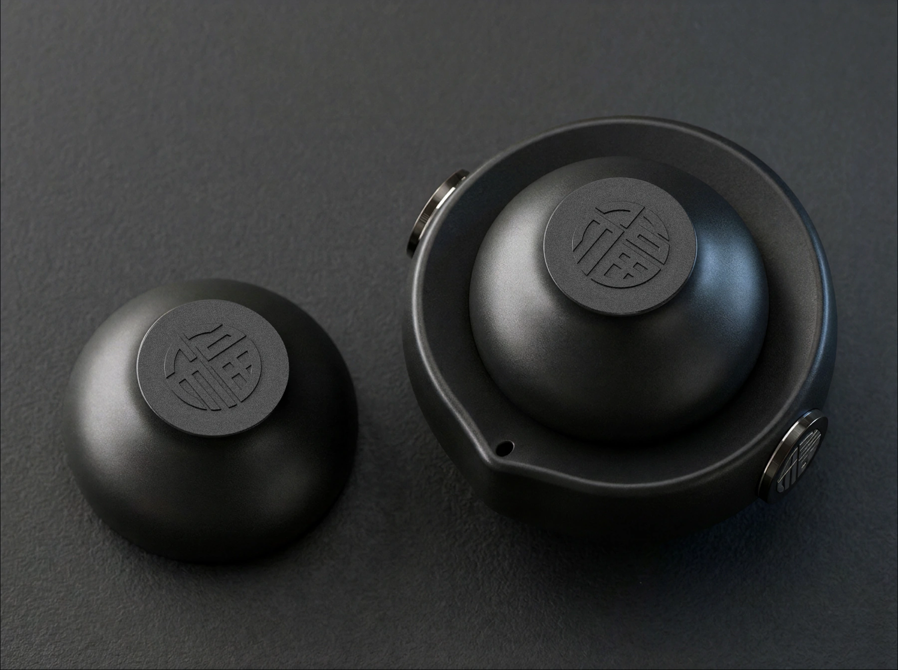
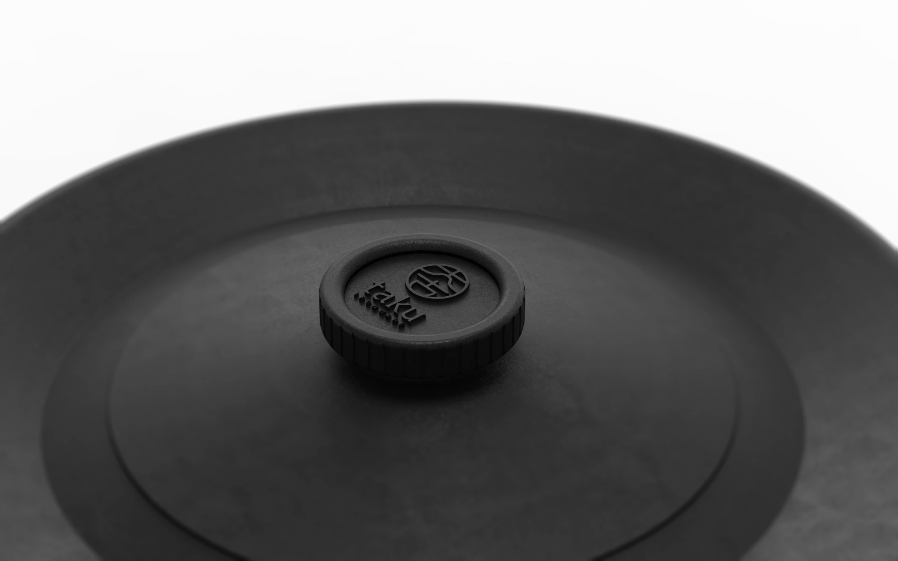
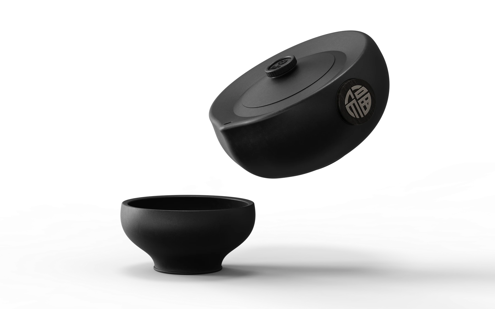
杯壺組／俯視、蓋鈕與分離關係。Compact set / top view, lid detail and separation.
SCALE & PROPORTION
Original orthographic drawing supplied for this proposal.以原始三視圖檢視壺身、茶杯與組合比例。
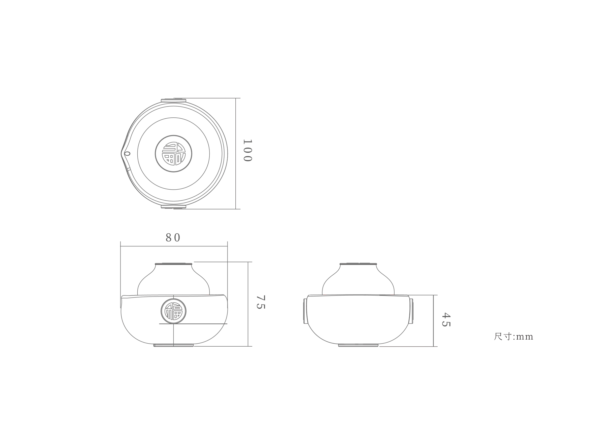
MATERIAL / CONTRAST / LIGHT
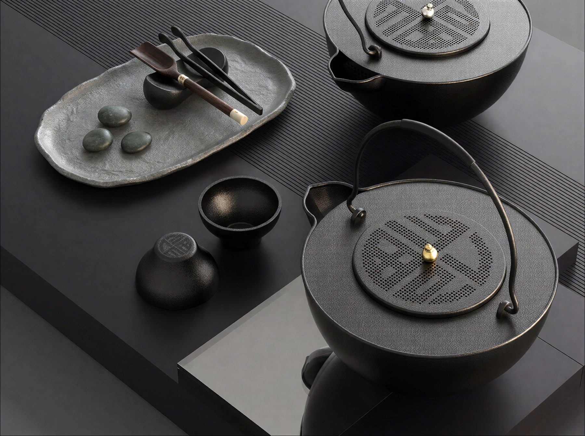
Cast-iron texture, lid pattern and metallic knob / concept rendering.鑄鐵質感、壺蓋紋樣與金屬蓋鈕／概念渲染。
03 / DIRECTION 02 / HANDLED TEAPOT
The second proposal gives the handle a stronger presence and brings the gourd motif into the lid knob, spout and graphic pattern.第二個方向讓提把成為主要輪廓，並將葫蘆意象帶入蓋鈕、壺嘴與壺蓋圖樣，形成更明確的整體識別。
The handle creates negative space above the bowl-like volume. Grip comfort and hot-surface clearance remain to be tested.提把與圓潤壺身形成虛實對比；握持舒適度與熱源間距仍需後續檢視。
The “福” motif extends across the lid, with the small gourd-shaped knob at its center.福字意象延伸為壺蓋紋樣，中央以小葫蘆蓋鈕回應主題。
Gold and silver knobs provide subtle contrast against the dark surface.以金、銀色蓋鈕比較深色器物上的細節對比。
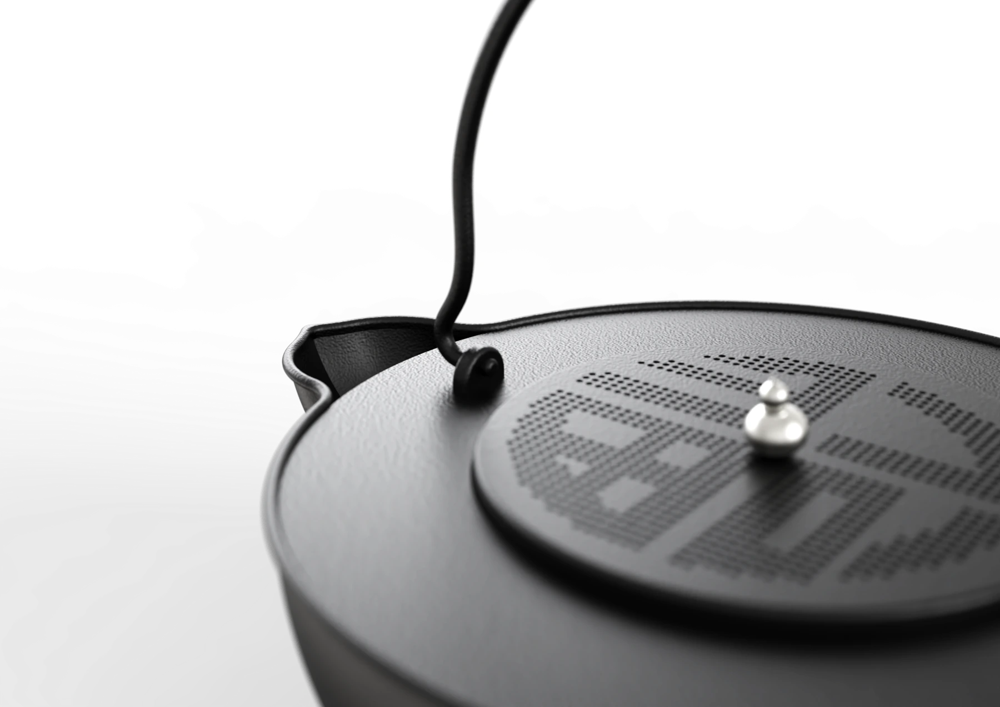
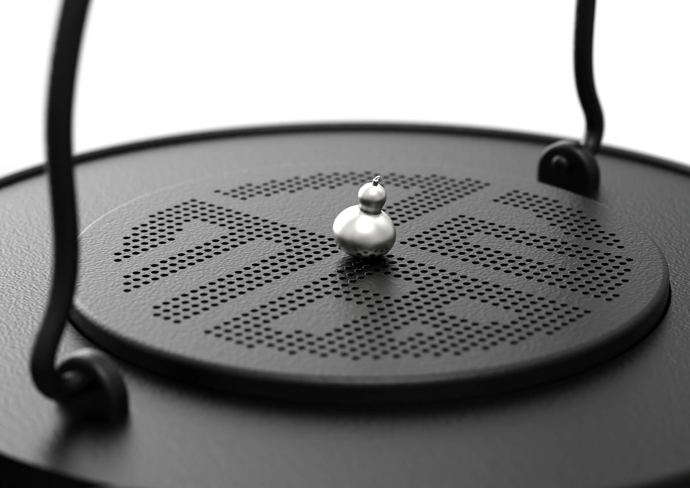
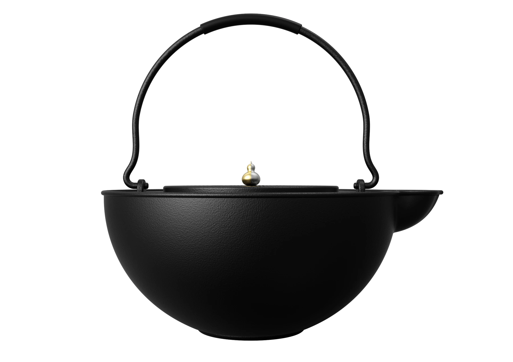
提把茶壺／完整輪廓與金色蓋鈕。Handled teapot / complete silhouette and gold knob.
SCALE & PROPORTION
Keep dimensions compact and separate from the main story.尺寸圖以較小版位呈現，與主要情境圖分開閱讀。
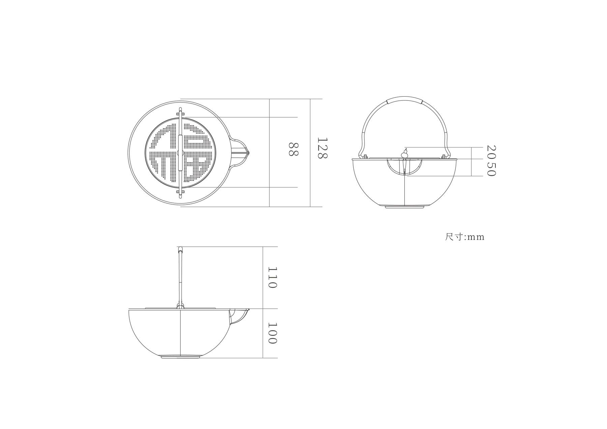